Gleb et le sport
Gleb est un personnage très sportif. Il aime le vélo, la course ou encore l'escalade. Il possède un compte Strava de grande qualité, sur lequel vous aurez l'occasion de suivre ses avancées et ses activités.
La course aux panneauxGleb est l'un des deux fondateurs et participants permanents d'une sorte de "Course aux panneaux". Dans celle-ci, lui, son camarade et parfois d'autres invités partent en vélo dans le but de prendre un selfie devant le plus de panneaux d'entrée d'agglomération possible. A ce jour (06/03/2026), le nombre de panneaux collectionnés est de : 67 (aucune vanne)
L'escaladeIl a notamment mis 39 € dans du bois pour améliorer ses performances !
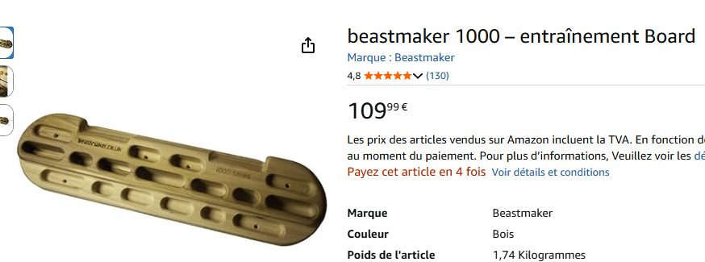
Informations supplémentaires :
- Son compte Strava : Ici
- Son vélo : Giant Talon 0

Gleb et les fruits
Gleb aime les fruits. Il sait couper une pomme en deux à la seule force de ses avant-bras depuis Janvier 2026. Voici sa tierlist des fruits pour plus de précision quant à ses préférences :
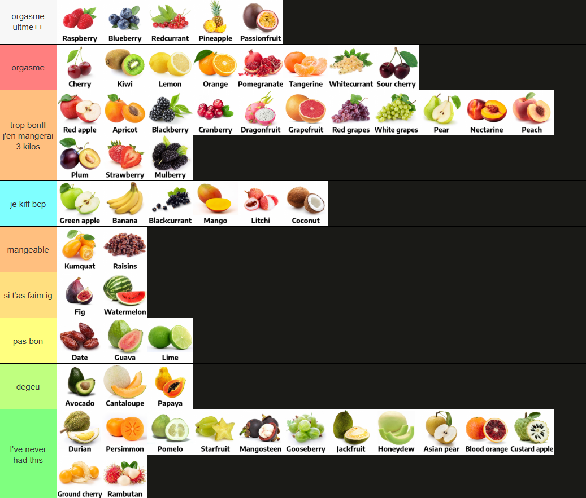
On peut observer que peu de fruits lui déplaisent.
Il mange même des pommes en cour de NSI ce petit saltimbanque...
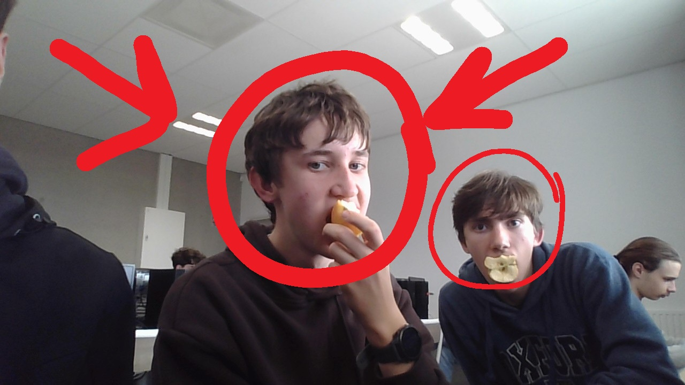
et des arbouses en sortie vélo !
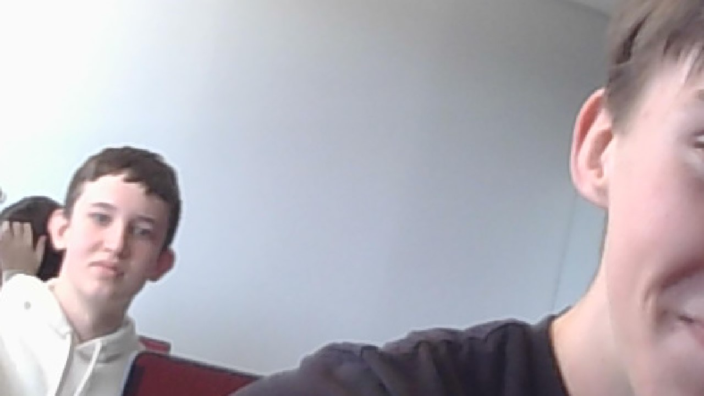
Gleb et la musique
Gleb possède des goûts musicaux d'une grande qualité et d'une grande diversité, allant de groupes russes niches à 3k streams à de grands artistes du paysage musical français (comme Young Prolétaire).
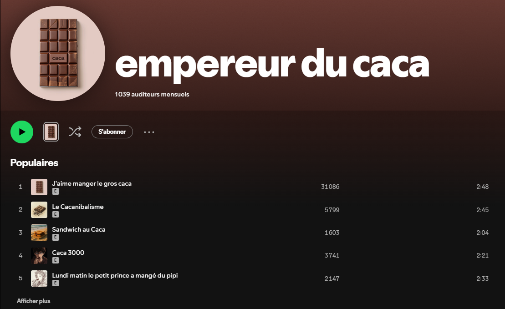
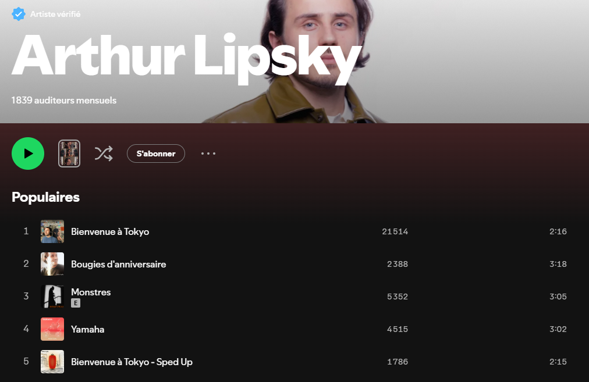
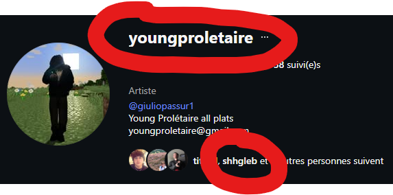
La playlist Golub Slup Muzic s'agit d'un projet collaboratif incluant Gleb, Titouan et Lisa. Dans celle-ci, Gleb a eu l'occasion d'ajouter plusieurs musiques, dont beaucoup de Kanye (preuve à l'appui). Après c'est pardonnable vu que Kanye West est le Mozart du XXIe siècle.
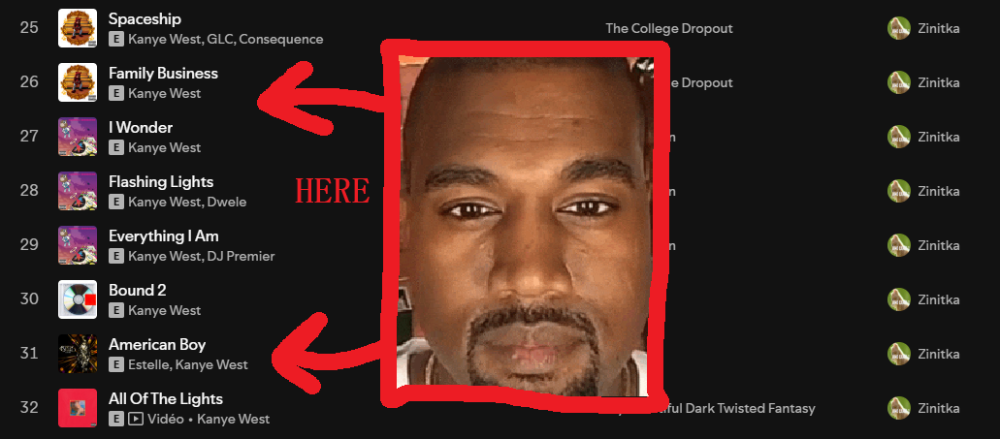
Gleb s'est d'ailleurs engagé concernant les polémiques entourant le chanteur, décidant par acte symbolique d'appeler son fils par le nom de l'artiste :
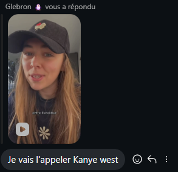
Le Reel
Gleb Shevtsov | Introduction
Gleb Shevtsov (Глеб Шевцов) est né le 15 Juillet 2009 à Almaty (Kazakhstan). Il habite désormais à Pépieux, 9 Rue du passage à Gué.


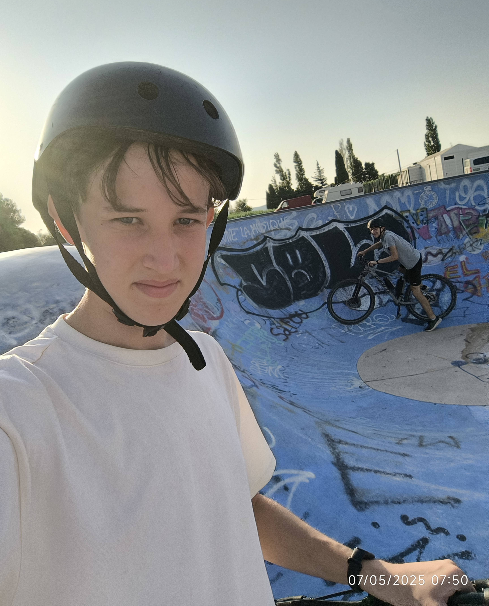
Gleb Shevtsov, le 07/05/2025
La voix de Gleb :
Comment contacter Gleb ?
- Instagram : https://www.instagram.com/shhgleb?
- Discord : gleb.shv
- Numéro de téléphone : +33 7 75 84 40 68
- Retro : Glsh
- Snapchat : sh.gleb
Une politique controversée ?
Gleb Shevtsov a affirmé lui-même soutenir l'état Israélien ainsi qu'une certaine fermeté quant aux débats sur le sujet. Cette déclaration, datant du 16 Août 2025 fait encore débat et est activement à l'usage dans certains packs de ressources.
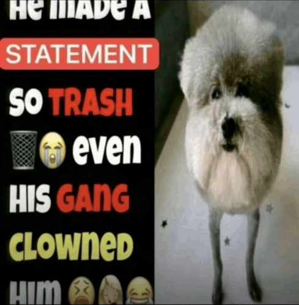

Gleb maintient également une politique affiliée à l'extrême droite française : politique migratoire stricte et punitive, discours xénophobes et à caractères racistes.
Attention, le discours suivant peut choquer certains utilisateurs par ses propos !
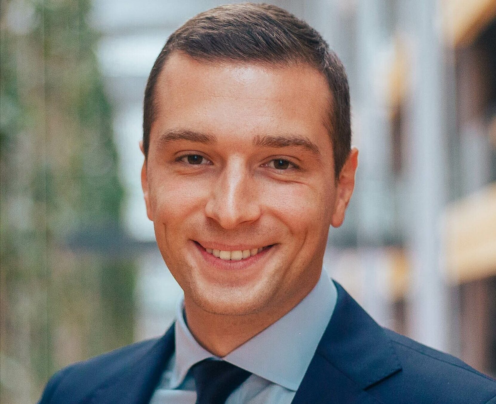
VOUS NE POURREZ PAS DIRE QUE VOUS N'ETIEZ PAS PREVENUS
Gleb et la drogue / l'alcool
Certains proches de Gleb affirment l'avoir observé en flagrante consommation de produits stupéfiants ou d'alcool forts non dilués. Nous retrouvons notamment dans ces nombreux cas ses parents.
La drogueSa mère traumatisée témoigne : "Je suis rentré à la maison lorsque Gleb brûlait de l'héroïne dans une de nos cuillères".
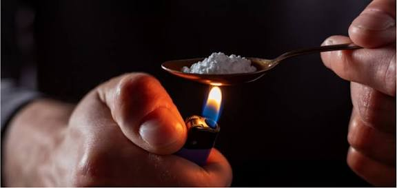
Gleb nie cependant jusqu'ici toute consommation de telles drogues. Celui ci affirme avoir voulu faire fondre du sucre mais l'enquête reste ouverte.
L'alcool